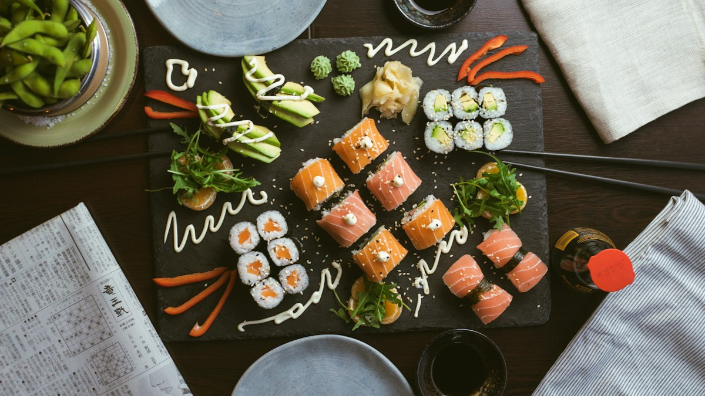
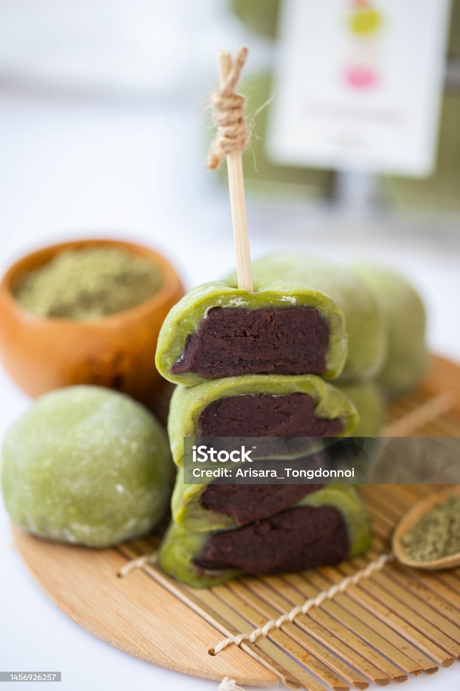

Benvinguts a Sakura Badalona
Tradició i fusió japonesa al cor de la ciutat.

Mestres del Sushi
Ingredients frescos seleccionats diàriament al mercat..

L'art del tall
Nigiris i sashimis preparats al moment davant teu.

Ramen
Ramen Autèntic — Receptes ancestrals de Kyoto preparades amb paciència. .

Gyozas
Entrants Deliciosos — Gyozas artesanes cruixents i edamame saltejat.
Qui Som?
Al Restaurant Sakura combinem tècniques mil·lenàries amb el millor peix fresc de la costa de Badalona.
La nostra missió és oferir una experiència gastronòmica autèntica, respectant els ingredients originals del Japó i oferint un ambient acollidor per a tota la família.
Horari d'Obertura
Dilluns a Dissabte: 13:00 - 16:00 | 20:00 - 23:30
Diumenges: Tancat per descans personal
Les Nostres Especialitats

Combo Sakura
Selecció especial de 18 peces: nigiris de salmó i tonyina roja, maki d'alvocat i uramaki cruixent.
Demanar/Reservar
Tonkotsu Ramen Artesanal
Caldo tradicional de porc cuit durant 12 hores, fideos frescos, chashu (cansalada marinada) i ou cuit.
Demanar/Reservar
Tempura Moriawase
Varietat de llagostins i verdures de temporada arrebossats en massa lleugera i cruixent estil japonès, acompanyat de salsa Tentsuyu.
Demanar/Reservar
Mochis de Matcha
Postre tradicional japonès elaborat amb massa d'arròs glutinós farcida de gelat de te verd Matcha i anko (mongeta vermella dolça).
Demanar/Reservar